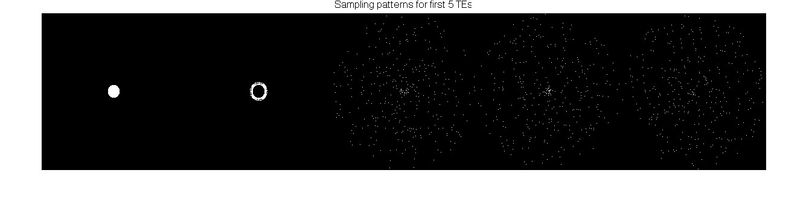

Contents
addpath src/utils
parameters
dims = [260, 240];
accel = [1.34, 1.34];
ETL = 82;
e2s = 2;
shuffle = true;
cut_corners = true;
num_masks = 8;
VD = 3;
mask_cal_size = 12;
options.dims = dims;
options.accel = accel;
options.ETL = ETL;
options.e2s = e2s;
options.shuffle = shuffle;
options.cut_corners = cut_corners;
options.num_masks = num_masks;
options.VD = VD;
options.mask_cal_size = mask_cal_size;
[masks, y_echoes, z_echoes, sp_mask] = gen_t2shuffling_mask(options);
figure(1);
imshow(reshape(masks(:,:,1:e2s+3), dims(1), []));
ftitle(sprintf('Sampling patterns for first %d TEs', e2s+3));
masks_avg = sum(masks(:,:,e2s+1:end), 3);
figure(2);
imshow(reshape(masks_avg, dims(1), []));
ftitle('Sampling pattern summed over time');
Actual acceleration is 1.850676
Actual acceleration is 13.824800
Actual acceleration is 13.844489
Actual acceleration is 13.844489
Actual acceleration is 13.836607
Actual acceleration is 13.852380
Actual acceleration is 13.711706
Actual acceleration is 13.801250
Actual acceleration is 13.746606
